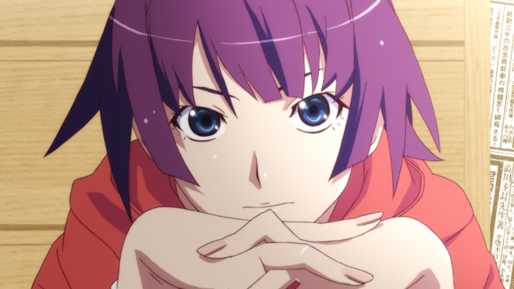

12 DEC 12
2

Hitagi Senjougahara
Hitagi Senjougahara (戦場ヶ原 ひたぎ, Senjōgahara Hitagi) is a third-year student of Naoetsu Private High School. She is considered to be a frail-looking girl with an "incurable disease" and is distant from others.